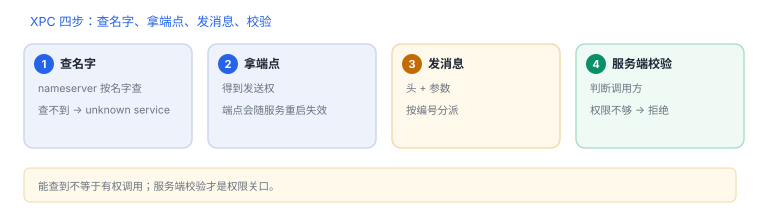

XPC 与 Mach 服务
客户端按名字查服务、拿端口、发消息；能不能调，取决于服务端的校验
Mach 端口解决“怎么投递”，XPC 解决“怎么组织服务”。系统服务通过 nameserver 注册名字，客户端查名字换到端点，之后仍是 Mach 消息。能不能调，最终取决于服务端的权限校验。
1. 分层：名字、端点、消息
| 层 | 是什么 | 谁负责 |
|---|---|---|
| 服务名 | com.apple.xxx 形式的字符串 | nameserver（引导端口） |
| 端点 | Mach 端口权能 | 内核与持有者 |
| 消息 | 头 + 参数 + 可能的端口描述符 | 双方约定 |
2. 一次调用的四步
- 客户端用名字查服务，拿到发送权。
- 服务端在自己的端口上接收，检查调用方上下文。
- 双方按约定的消息编号与格式交换数据。
- 调用结束，客户端释放端点（或保留复用）。
第 2 步是权限关口：名字能查到，不代表有资格调用；服务端仍要判断调用方是谁、要做什么。

3. 名字查不到，通常是这三种情况
| 现象 | 原因 | 查哪里 |
|---|---|---|
| unknown service | 服务未启动或名字不同 | 服务是否在运行、名字大小写 |
| 能查到但调用被拒 | 服务端权限校验不通过 | 调用方身份与授权 |
| 偶发失败 | 服务正在重启 | 重试与超时策略 |
4. 一次真实排查记录：调用偶发失败
- 现象：多数调用成功，少数返回失败，重启应用后恢复。
- 先看错误码：是“端点失效”还是“超时”，两者处理方式不同。
- 查服务状态：服务在系统更新或空闲时会被重启，端点随之失效。
- 改策略：端点失效后重新按名字查一次，而不是复用旧端点。
- 结论与限制：记录“端点失效未重建”，并注明结论只对该服务生命周期成立。
5. 与 Mach IPC 的分工
| 问题 | 看 Mach IPC | 看 XPC |
|---|---|---|
| 谁能发消息 | 端口权能 | 服务名可查性 |
| 消息长什么样 | 头字段与长度 | 接口与序列化 |
| 为什么被拒 | 无权能 / 失效 | 服务端校验 |
6. 工程权衡：XPC 还是进程内
| 方式 | 收益 | 代价 |
|---|---|---|
| 进程内调用 | 零序列化、调试简单 | 崩溃互相拖累，权限共享 |
| XPC 到独立服务 | 崩溃隔离、权限最小化 | 序列化开销、生命周期管理 |
| XPC 到系统服务 | 复用系统能力 | 受权限与版本约束，不可控 |
判断标准是“崩溃是否会互相拖累”和“是否需要更小的权限”：两者任一成立，就值得拆进程。
7. 数据细节：一次调用的量级
| 项 | 量级 | 含义 |
|---|---|---|
| 消息头 | 24 字节 | 与 Mach 消息共用 |
| 端口名 | 4 字节整数 | 不是地址，只有权能有效 |
| 常见载荷 | 几十字节到数 KB | 大对象应改为共享内存或分块 |
| 端点生命周期 | 随服务重启失效 | 客户端需重新查名字 |
载荷越大，序列化与拷贝越贵；“把整张表塞进一条消息”通常是不必要的设计。
8. 自测
- 名字、端点、消息分别由谁维护？
- 为什么“能查到服务”不等于“有权调用”？
- 端点失效后正确的处理方式是什么？
- XPC 与 Mach IPC 在排查时各自负责回答什么问题？